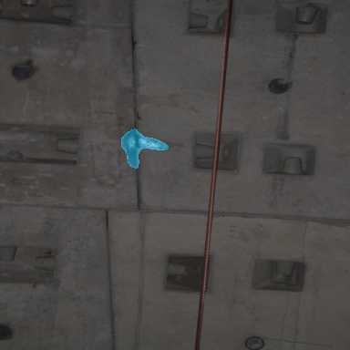

机器人隧道巡检病害监测系统 loading /api/project-summary
机器人隧道巡检病害时空监测 Dashboard
融合 KICT 裂缝 mask 几何特征与仿真巡检元数据，实现病害工程化定位、跨巡检增长分析和重点复检清单生成。
Inspection-
Frames-
Defects-
Recheck-
High risk-
rule evidence
requires review
simulation/coarse
Selected 结果展示

展示系统最终选择的病害区域叠加结果，和单图检测里的“选择叠加图”保持一致。
里程风险分布
等待图表。
重点复检清单
等待 priority_recheck_list.csv。
病害证据
选择一个复检对象。
工程化病害报告 /api/engineering-report
等待工程报告。
跨巡检增长分析 /api/growth-analysis
等待增长分析。
重点复检清单 /api/recheck-list
等待复检清单。
可视化图表 /api/visualization-assets
等待图表。
单图检测 / 现场复核
mask / GT / uncertainty / Self IoU
拖入图片实时检测
支持 jpg / png / bmp / tif；首次检测会加载模型权重，后续图片复用同一个模型实例。
把隧道衬砌图片拖到这里，或点击选择文件。检测完成后，下方证据图和风险报告会自动刷新。
实时检测服务：等待上传。
SegFormer B1 阶段结果 160000 iter / val set
主干升级完成：mIoU 84.33
基于 6 类 mmseg 数据集验证集，训练集 700 张、验证集 150 张。当前 checkpoint 已跑满 160000 iter。
GLOBAL+3.23 mIoU
有效提升从 16000 到 160000，global mIoU 由 81.10 提升到 84.33，说明继续训练仍有收益。
强项类别pipeline 与 vertical 已分别达到 94.16 / 95.85，细长结构识别能力明显增强。
主要瓶颈blocky 当前 IoU 53.58，是后续冲分最值得优先优化的类别。
选择叠加图
最终选择的 mask 半透明叠加回原图，用来看病害位置和覆盖范围。
Metrics summary Single / Fused / Selected
Single mIoU0.2221单次预测与人工标注 GT 的重叠度，1 表示完全一致。
Fused mIoU0.1732TTA 融合预测与人工标注 GT 的重叠度。
Selected mIoU0.2221Adaptive fusion 选择输出与人工标注 GT 的重叠度。
Delta selected0Selected mIoU - Single mIoU，用于观察自适应选择是否损伤精度。
Mean uncertainty0.1554评估样本上的平均不确定程度。
形态量化明细
| 类别 | 面积像素 | 面积占比 | 连通域 | 骨架长度 | 主方向 | 风险 |
|---|---|---|---|---|---|---|
| simple | 1108 | 0.007514 | 1 | 63 | vertical 88.19 deg | Medium / 需复核 |
| blocky | 0 | 0 | 0 | 0 | - | None |
| pipeline | 0 | 0 | 0 | 0 | - | None |
| vertical | 0 | 0 | 0 | 0 | - | None |
| horizontal | 0 | 0 | 0 | 0 | - | None |
形态变化解释
single -> fusedN/A等待 morphology_delta。
Structured report JSON excerpt
结构化报告会在本地输出目录生成。
下载结构化报告
Multidomain summary civil / track / equipment
| 领域 | 病害类型 | 来源 | 状态 | 位置 | 置信度 | 复核优先级 |
|---|
机器人时空巡检报告 FrameRecord / defect tracks / claim guard
Route-level JSON
等待加载 robot_route_report.json
Frames-
等待路线级样例数据。
Tracks-
等待 defect tracks。
Review queue-
等待复核队列。
Claim guard-
等待边界声明。
Track evidenceN/A
加载后显示跨时间、里程和环号聚合结果。
机器人巡检报告把连续照片排序成 FrameRecord，再把单图检测结果聚合成 defect tracks；同一轮拍摄只标 apparent-change-evidence，只有跨轮次且可比时才允许 suspected-growth。
数据说明与仿真边界 KICT + simulation metadata
本系统使用 KICT Tunnel Crack Segmentation Dataset 中的真实隧道裂缝图像和 mask 几何特征；机器人巡检过程中的时间、里程、环号、方位、disease_id 以及跨巡检增长关系为仿真元数据。本系统当前用于验证机器人巡检场景下病害工程化描述、时空聚合、增长分析和复检清单生成流程，不代表真实隧道病害长期演化规律。